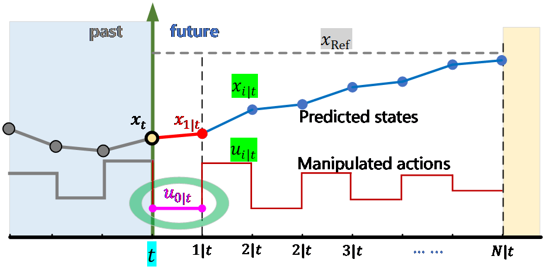

Agentic Configuration of Model Predictive Control for Launch Vehicle Failure Mitigation
Can an AI supervisor learn to reconfigure a deterministic MPC problem on the fly — the way a flight controller would — when a rocket engine starts to fail?
Motivation
Why a fixed control formulation isn't enough when things go wrong mid-flight.
The Problem
Launch vehicle propulsion failures can suddenly change thrust magnitude, thrust symmetry, and available control authority during ascent. A mild degradation may permit continued flight with trajectory adjustment — a severe or asymmetric loss may force retargeting, tighter constraints, or prioritizing stability over the original mission.
Why MPC — and Its Gap
Model Predictive Control naturally optimizes control actions under dynamics and constraints. But MPC performance depends strongly on how it's configured — horizon, objective weights, terminal target, active constraints — and these are usually fixed offline, even though the ideal formulation shifts as the failure evolves.

Research Question
Proposed Framework
The agent doesn't fly the rocket — it configures the problem the solver flies. A verifier closes the loop with solver and constraint feedback, enabling bounded replanning.
Estimate
Supervisor
Specification
Solver
Input
Synthetic structured states: failure type, onset time, residual thrust or specific impulse, severity uncertainty, and current vehicle state.
Agent's Role
Supervisory only — interprets failure state, selects from a bounded set of MPC configurations, invokes the solver, and evaluates the result. It never issues control commands directly.
The Loop
Observe → configure → solve → evaluate → revise. Failed verifier checks are returned to the agent for another bounded configuration attempt.
What the Agent Can Configure
A bounded, approved configuration space — not free-form control generation.
Horizons
Prediction and control horizon lengths for the MPC problem.
Terminal Target
Terminal trajectory or mission target given the failure severity.
Objective Emphasis
Trajectory tracking, propellant use, control effort, or attitude stabilization.
Constraint Templates
Approved constraint templates or constraint tightening rules.
Mitigation Mode
The overall response posture — continue, retarget, or stabilize-first.
Failure Scenarios Under Test
Test cases span severity and failure type — illustrative coverage map of the scenario space the agent must handle. A reduced-order launch vehicle model is used, avoiding dependence on an engine dataset.
| Failure Mode | Mild | Moderate | Severe |
|---|---|---|---|
| Thrust Degradation | ✓ | ✓ | ✓ |
| Asymmetric / Single-Engine Loss | ✓ | ✓ | ✓ |
| Specific-Impulse Degradation | ✓ | ✓ | ✓ |
| Variable Onset Time | ✓ | ✓ | ✓ |
| Uncertain Residual Capability | ✓ | ✓ | ✓ |
Methodology & Evaluation
The agentic approach is benchmarked against three baselines that share the same plant model and MPC solver — isolating the value of agentic reasoning itself, not the underlying optimizer.
Baselines Compared
(no solver feedback) no verification
(this project) closed-loop
Illustrative comparison of expected configuration adaptivity — actual results will be measured empirically, not assumed.
Evaluation Metrics
Performance is judged relative to the best MPC configuration found via offline search over the same approved configuration space, using:
Expected Contribution
Adaptive MPC Configuration Under Changing System Conditions
This project examines where agentic reasoning can augment conventional optimization — not by replacing the controller, but by making supervisory decisions about how an MPC problem should be formulated in response to an evolving propulsion failure. The agent operates within a bounded, verifiable configuration space, with hard vehicle constraints preserved throughout.
Open Questions
Since this is a class project proposal, a few things are yet to be finalized.
Scope
How much of the observe–configure–solve–evaluate–revise loop is feasible to prototype within the course timeline.
Data / Simulation
Exact fidelity of the reduced-order launch vehicle model and how failure states will be synthetically generated.
Constraint Bounds
How the approved configuration space and constraint templates will be defined to guarantee hard constraints are never violated.